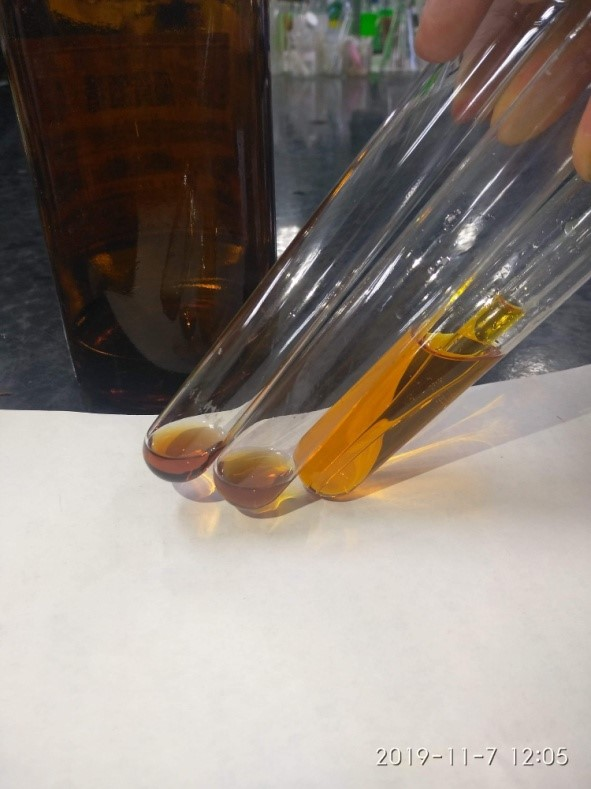
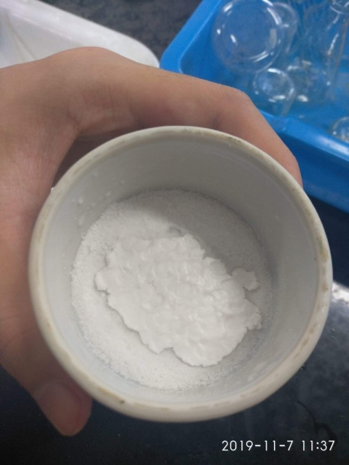

製作阿斯匹靈
實驗器材:
1.柳酸2g 2.乙酐4ml 3.3M鹽酸10ml
4.濃硫酸 5.飽和碳酸氫鈉20ml 6.燒杯、試管、量筒
7.冰塊 8.錶玻璃 9.抽濾漏斗
10.酒精燈+支架 11.玻璃棒
製作:
1.在乾燥試管中加入柳酸、乙酐及濃硫酸。
2.置於熱水浴中，加熱使其完全溶解。
3.將溶液放入冰水中冰鎮，直至其沉澱。
4.以抽濾裝置過濾溶液，收集固體產物，並以冰水將瓶子壁上的固體沖洗出來，水分抽乾後即為阿斯匹靈粗製產物。
5.將粗製產物逐滴加入飽和碳酸氫鈉溶液，攪拌置不再冒泡。
6.以抽濾裝置過濾溶液，取溶液，並將其加入鹽酸並不斷攪拌，之後冰鎮冷卻。
7.以抽濾裝置過濾溶液，盡量將水分抽乾，放在錶玻璃上，送入烘箱烤。(下圖右)
※注意事項:第1步驟不可以碰到任何一滴水。
※步驟2中加熱不可超過80度C。
檢驗方法:
1.取三支試管，分別加入產物0.01克、柳酸0.01克、空白。各滴入酒精1毫升、氯化鐵三價溶液1滴。
2.若為阿斯匹靈則顏色應跟氯化鐵三價顏色相同，為黃褐色。(下圖左)
實驗心得:
在做實驗時，因為只有看影片，所以大家在做實驗的時候，在某些操作上比較生疏，甚至有些組
別還差點做不完，不過幸好所有組別最後還是有將潮濕的阿斯匹靈放進烘箱內烘烤，最後檢測出來，
大致上的組別都有5、60%的純度，聽老師說還有兩組甚至有80%左右，那這就很值得我們學習，畢竟
大家都是在同樣時間內完成同 樣的實驗，但是他們得到的純度，卻比其他組還高，這就需要我們其他
組效仿，才能在以後不管大學還是之後的實驗中，能更進一步的提升自己的實力。
圖片:

